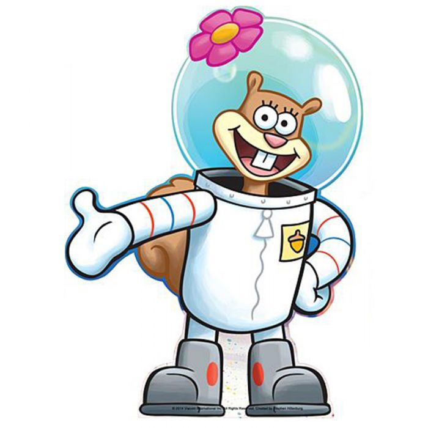

3)Сандра "Сэнди" Чикс

Описание:
Белка из Техаса, разговаривающая на южном диалекте, подруга Губка Боба и Патрика. Сэнди — талантливая учёная и изобретательница; изначально переехала в Бикини-Боттом, чтобы изучать морских существ и их образ жизни. Также Сэнди увлекается экстремальными видами спорта, тяжёлой атлетикой, восточными единоборствами и бодибилдингом. Является чемпионкой по родео
День Рождения:17 ноября 1987 г
Пол:Женский
Рост:30,5см
Вес:700г
Интересные факты:
-Имя "Сэнди" является уменьшительной формой Сандры, которая в свою очередь может быть уменьшительной формой имён Александра или Кассандра.
-Название организации, в которой работает белка, — Tree Dome Enterprises Limited
-По иронии судьбы, несмотря на амплуа ученого-гения, при первом появлении Чикс удивляется, что морские жители не способны дышать без воды.
-Во время спячки она увеличивается в размерах.
-У героини около сотни кузенов.
Назад